23 Tema Undangan, 23 Kepribadian
Dari amplop klasik bersegel lilin sampai doodle Gen Z — semua contoh memakai pasangan demo yang sama (Nadia & Raka, Sabtu 20 Maret 2027) supaya mudah dibandingkan. Klik tema untuk membuka undangannya.
Setiap tema premium tersedia dalam dua versi — dengan foto pasangan, atau tanpa foto mempelai (cocok untuk konsep syar'i & menjaga privasi — gambar dekorasi tema tetap tampil). Tombol ini mengganti versi contoh pada kartu tema premium bertanda ★.
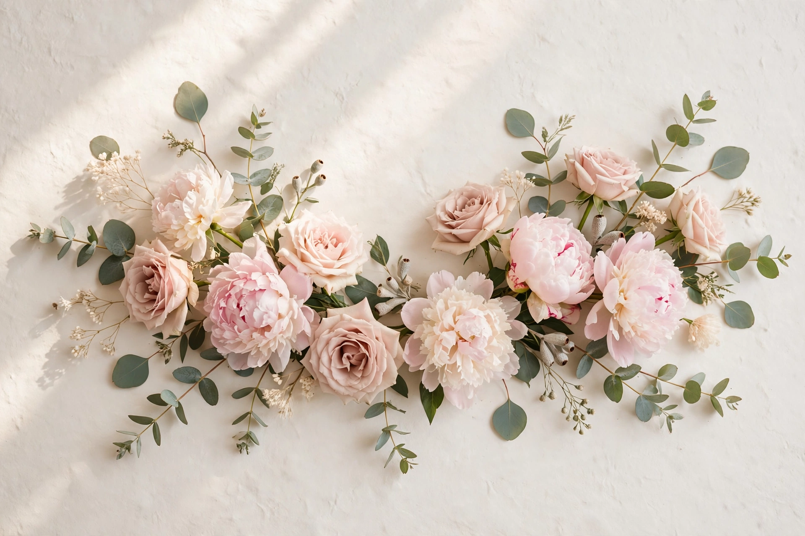
01❀Nadia & RakaArunika Floral
Floral & Alam
Nuansa bunga lembut dan cahaya pagi — romantis, hangat, dan feminin.
Lihat Contoh →Klasik Jawa
Adat Nusantara
Palet cokelat sogan dan emas dengan pola kawung — sakral dan berkelas.
Lihat Contoh →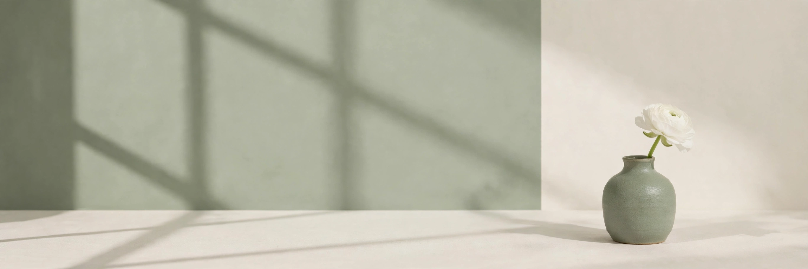
03❧Nadia & RakaSage Minimal (Tanpa Foto)
Islami & Modern
Bersih, tenang, modern — tampil penuh tanpa satu pun foto pasangan.
Lihat Contoh → 04✦Nadia & Raka
04✦Nadia & Raka
Samudra Burgundy
Amplop Klasik
Tirai emerald gelap, amplop burgundy, dan segel lilin emas terasa seperti undangan premium di galeri pernikahan.
★ Premium · Dengan FotoLihat Contoh → 05❀Nadia & Raka
05❀Nadia & Raka
Mahoni Klasik
Amplop Klasik
Kertas krem bertekstur dan amplop mahoni dengan mawar putih untuk kesan hangat, dewasa, dan tak lekang waktu.
★ Premium · Dengan FotoLihat Contoh → 06✦Nadia & Raka
06✦Nadia & Raka
Samudra Malam
Amplop Klasik
Navy dalam dan emas tenang menghadirkan amplop malam yang formal, maskulin, dan berkelas.
★ Premium · Dengan FotoLihat Contoh → 07◆Nadia & Raka
07◆Nadia & Raka
Hitam Emas
Amplop Klasik
Hitam pekat, garis emas tipis, dan tipografi kontras tinggi untuk pasangan yang ingin tampil tegas dan mewah.
★ Premium · Dengan FotoLihat Contoh →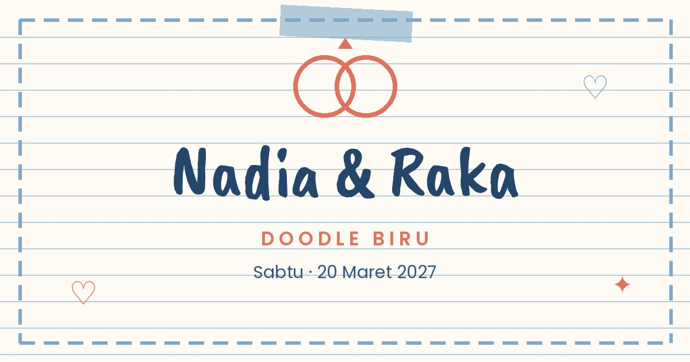
08♡Nadia & RakaDoodle Biru
Ilustrasi & Playful
Coretan tangan biru, hati besar, panah, dan bintang di atas putih—ringan, jujur, dan sangat Gen Z.
★ PremiumLihat Contoh → 09❦Nadia & Raka
09❦Nadia & Raka
Pita Krem
Elegan & Mewah
Amplop krem dengan pita satin perak yang seolah baru diikat—puncak minimalisme mewah ala referensi Sponsalia.
★ Premium · Dengan FotoLihat Contoh → 10◆Nadia & Raka
10◆Nadia & Raka
Art Deco Emas
Elegan & Mewah
Kipas deco, geometri simetris, dan hitam-emas ala pesta Gatsby tahun 1920-an.
★ Premium · Dengan FotoLihat Contoh → 11✦Nadia & Raka
11✦Nadia & Raka
Marmer Putih
Elegan & Mewah
Marmer putih dengan urat abu halus dan garis emas tipis—dingin, bersih, dan sangat premium.
★ Premium · Dengan FotoLihat Contoh → 12♛Nadia & Raka
12♛Nadia & Raka
Zamrud Royal
Elegan & Mewah
Zamrud pekat, mahkota kecil, dan simetri klasik untuk tema royal yang tidak berlebihan.
★ Premium · Dengan FotoLihat Contoh → 13❀Nadia & Raka
13❀Nadia & Raka
Rose Gold
Elegan & Mewah
Gradasi rose gold metalik, mawar blush, dan krem susu untuk kilau feminin yang modern.
★ Premium · Dengan FotoLihat Contoh →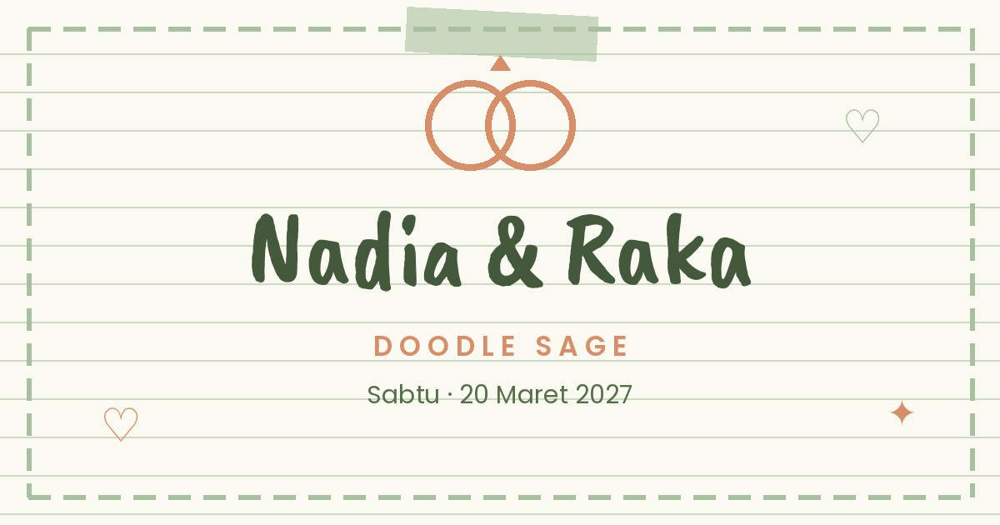
14♡Nadia & RakaDoodle Sage
Ilustrasi & Playful
Buku harian bernuansa sage & terakota — adem, earthy, kalem.
★ PremiumLihat Contoh →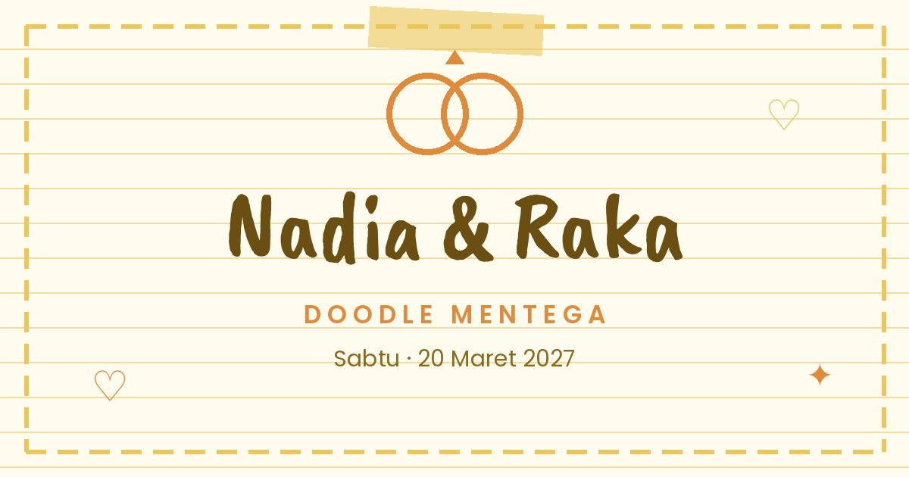
15♡Nadia & RakaDoodle Mentega
Ilustrasi & Playful
Buku harian kuning mentega — cerah, hangat, penuh energi baik.
★ PremiumLihat Contoh →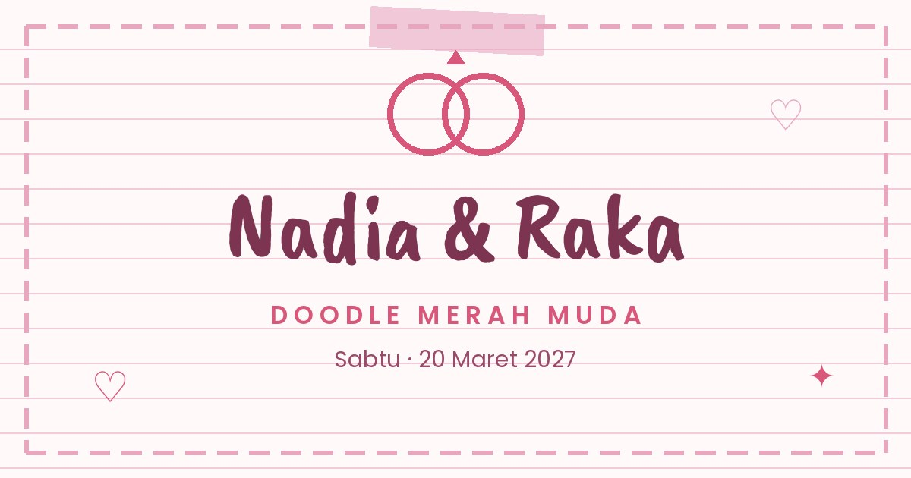
16♡Nadia & RakaDoodle Merah Muda
Ilustrasi & Playful
Buku harian pink pastel & plum — manis, lembut, romantis playful.
★ PremiumLihat Contoh →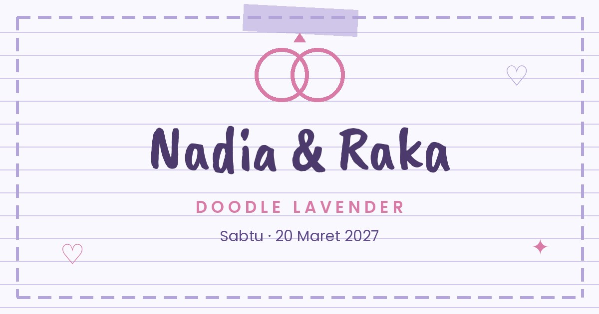
17♡Nadia & RakaDoodle Lavender
Ilustrasi & Playful
Buku harian lavender & ungu tinta — dreamy, lembut, beda dari yang lain.
★ PremiumLihat Contoh →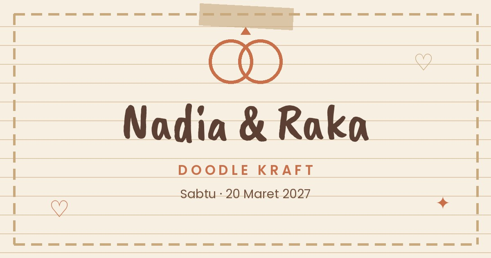
18♡Nadia & RakaDoodle Kraft
Ilustrasi & Playful
Buku harian kertas kraft cokelat — vintage, hangat, membumi.
★ PremiumLihat Contoh →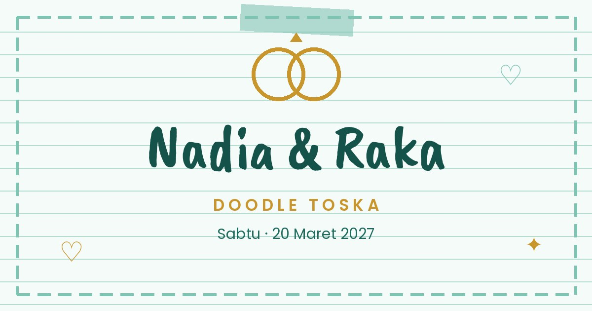
19♡Nadia & RakaDoodle Toska
Ilustrasi & Playful
Buku harian toska & mustard — segar, ceria, tropis playful.
★ PremiumLihat Contoh → 20❀Nadia & Raka
20❀Nadia & Raka
Kayu Manis
Floral & Alam
Undangan yang digerakkan foto: panel kayu gelap, script kuning hangat, foto kasual kalian jadi bintang utamanya — semua slot tinggal diganti foto sendiri.
★ PremiumLihat Contoh →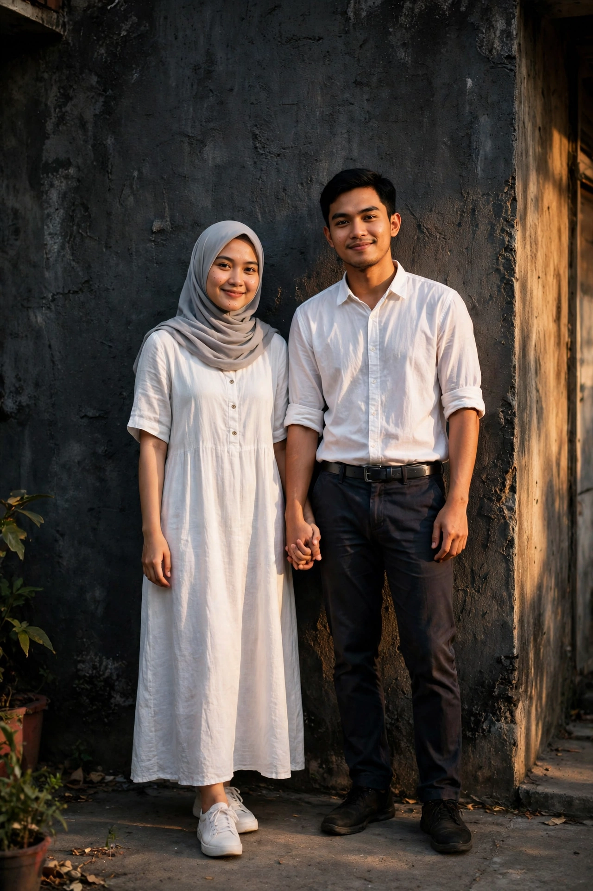
21❀Nadia & RakaKayu Arang
Floral & Alam
Keluarga Kayu versi arang: dinding gelap tekstur, script perak-sampanye, foto kontras terang — moody dan elegan.
★ PremiumLihat Contoh →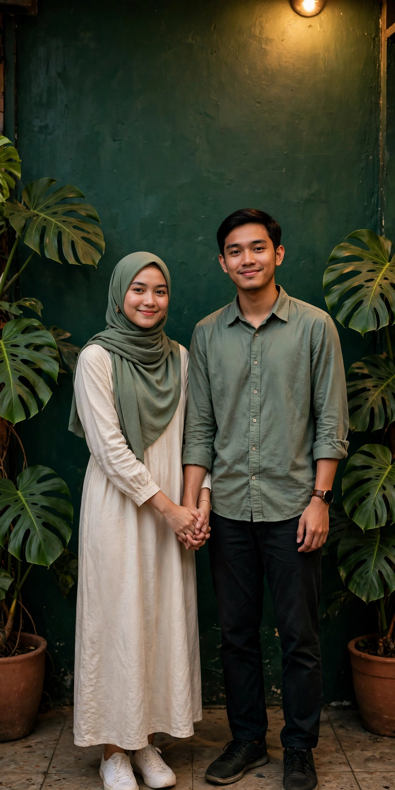
22❀Nadia & RakaKayu Lumut
Floral & Alam
Keluarga Kayu versi hijau botol & monstera: script emas lembut, foto sage-krem yang adem dan hidup.
★ PremiumLihat Contoh →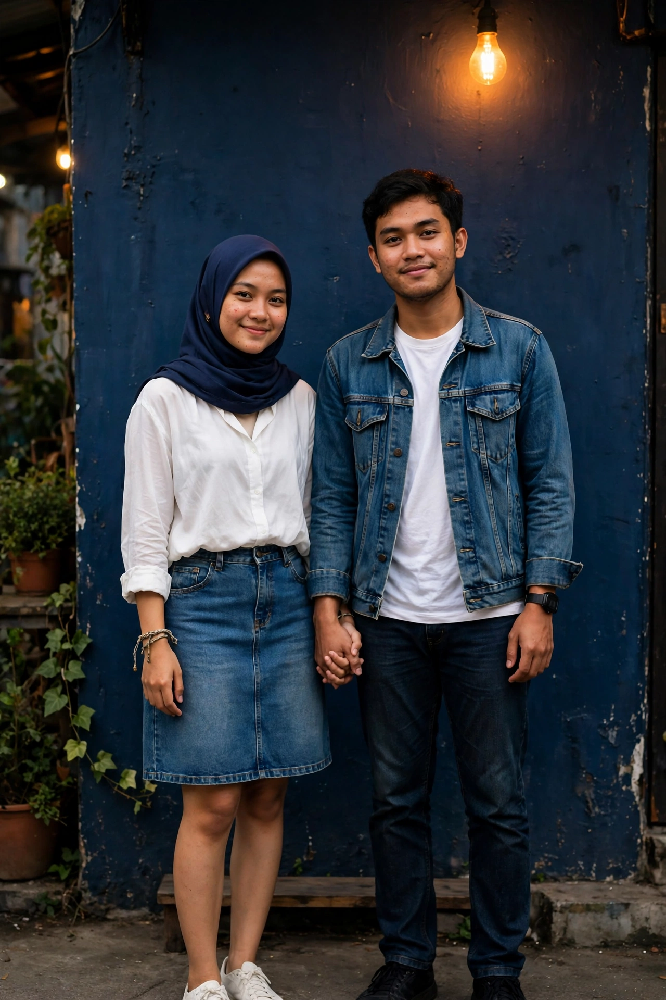
23❀Nadia & RakaKayu Denim
Floral & Alam
Keluarga Kayu versi navy denim: aksen tan, foto denim-putih di dinding biru — kasual, muda, beda.
★ PremiumLihat Contoh →